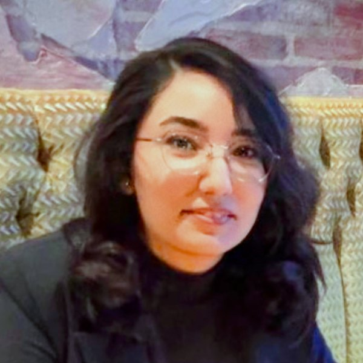

Nastaran Tork
Ph.D. candidate, Civil Engineering (Transportation), University of Minnesota
M.S., Data Science in Operations Research
I do transportation research from problem definition to final report, with a focus on analysis that public agencies can put to use.
My training is in optimization and data science, and my experience is in transportation and logistics systems. I work with real agency data, write the reports and tools decision makers use, and present to technical and non technical audiences.

Research projects
Graduate research assistant on two MnDOT funded studies, working from raw data to final report and helping with proposals.
Communication
Share results with agency staff through technical reports, a public webinar, and tools they can run themselves.
Do the technical work
Optimization, network modeling and data engineering on large, messy real-world data, delivered as reproducible code.
| When | What | Status |
|---|---|---|
| Jan 2027 | Presenting truck weight limit policy at the statewide network scale, a Minnesota case study, at the TRB Annual Meeting in Washington, DC. | Accepted |
| 2026 | Paper on charger deployment and fleet sizing under multi-stage budgets, in Transport Policy. | Published |
| 2026 | MnDOT report Transitioning to EV Fleets: Best Practices and a Decision Tool, with the open source tools behind it. | Published |
| 2026 to 27 | Doctoral Dissertation Fellowship, University of Minnesota. | Awarded |
| 2026 | Matthew J. Huber Award for Excellence in Transportation Research and Education. | Awarded |
| Nov 2025 | Incentive compatible bike rebalancing with local store delivery, at IEEE ITSC. | Presented |
Earlier
| Jan 2026 | Two papers at the TRB 105th Annual Meeting, on staged fleet electrification and on barriers to local government EV adoption. | Presented |
| 2025 | The UMN INFORMS Student Chapter, where I am Event Coordinator, earned Cum Laude in the 2025 to 2026 Annual Awards. | Awarded |
| 2025 | Freight logistics and passenger transport article in Transportation Research Record. | Published |
| 2025 | ITS Minnesota Student Scholarship and WTS Minnesota Graduate Scholarship. | Awarded |
Projects
Three areas where I have worked on studies and built tools.
Freight on passenger networks
Delivery vans fight for the same streets that buses and bikes already run on. I model how parcels can ride scheduled transit and crowd-shipped bikes for the last mile, and how to design payments so that joining is worth it for riders and the system, without hurting passenger service.
- Bridging freight logistics and passenger transport, Transportation Research Record 2025
- Incentive compatible bike rebalancing and store delivery, IEEE ITSC 2025
- Dissertation chapters on integrating last-mile delivery with transit, bike share, and multimodal urban freight
Electric public fleets
A fleet manager has a budget, a depot and a grid connection, and has to decide what to buy and where to charge, in what order. I plan multi-stage charger deployment and fleet sizing under budget limits on real fleet data, and turned the results into a state report and two Python tools.
- Charger deployment and fleet sizing under multi-stage budgets, Transport Policy 2026
- Transitioning to EV Fleets, MnDOT report MN 2026-15
- Two open source planning tools
Truck policy at network scale
When a weight limit changes, trucks change routes. I fused tonnage, weigh-in-motion and location data into statewide truck demand, then ran freight assignment across eight policy scenarios to see route shifts, vehicle miles traveled and permit revenue. This is the second MnDOT funded study I have worked on.
- Statewide truck weight limit policy evaluation, TRB 2027 (accepted)
- Corridor level truck flow visualization for planners
Methods underneath. Large-scale and discrete optimization, mechanism design, stochastic processes, dynamic programming and reinforcement learning for sequential decisions under uncertainty, and the data engineering that makes models run on messy real data.
Selected papers
Newest first. My name is in bold. Full list on Google Scholar.
- 2027
Evaluating Incremental Truck Weight Limit Policy at the Statewide Network Scale: A Minnesota Case Study
Tork, N., Khani, A., Baek, K., & Marasteanu, M.
Transportation Research Board 106th Annual Meeting, Washington, DC (TRBAM-27-03211)
- 2026
Charger Deployment and Fleet Sizing for Heterogeneous Fleets Under Budget-Constrained Multi-Stage Electrification
Tork, N., Emami, B. D., Baek, K., Khani, A., Bhandari, S., & Ryan, A.
Transport Policy
- 2026
Transitioning to EV Fleets: Best Practices and a Decision Tool
Tork, N., Baek, K., Khani, A., Bhandari, S., & Ryan, A.
Minnesota Department of Transportation, Report No. MN 2026-15
- 2025
Efficient Urban Transit Systems: Bridging Freight Logistics and Passenger Transport
Tork, N., Baek, K., & Khani, A.
Transportation Research Record, 2679(11), 782–804. Also presented at TRB 104th Annual Meeting, January 2025
More papers (7)
- 2026
Planning Charging Infrastructure Network and Fleet Size for Mixed Fleets in Staged Electrification with Budget Constraints
Tork, N., Emami, B. D., Baek, K., Khani, A., Bhandari, S., & Ryan, A.
Transportation Research Board 105th Annual Meeting, Washington, DC, January 2026
- 2026
Barriers to Local Government Electric Vehicle Fleet Transitions: Insights from Minnesota
Bhandari, S., Panhorst, J., Ryan, A., Tork, N., Baek, K., & Khani, A.
Transportation Research Board 105th Annual Meeting, Washington, DC, January 2026
- 2026
Psychological and Operational Barriers to Public Electric Vehicle Fleet Adoption in Minnesota
Bhandari, S., Panhorst, J., Ryan, A., Tork, N., Baek, K., & Khani, A.
Transportation Research Interdisciplinary Perspectives
- 2025
Incentive-Compatible Mechanism for Integrated Bike Rebalancing and Local Store Deliveries
Tork, N., & Khani, A.
IEEE 28th International Conference on Intelligent Transportation Systems (ITSC), 4604–4610
- 2021
An adaptive modified neural lateral-longitudinal control system for path following of autonomous vehicles
Tork, N., Amirkhani, A., & Shokouhi, S. B.
Engineering Science and Technology, an International Journal, 24(1), 126–137
- 2021
Trajectory tracking of a quadrotor using a robust adaptive type-2 fuzzy neural controller optimized by cuckoo algorithm
Shirzadeh, M., Amirkhani, A., Tork, N., & Taghavifar, H.
ISA Transactions, 114, 171–190
- 2019
Path tracking of an autonomous vehicle by means of an indirect adaptive neural controller
Amirkhani, A., Shirzadeh, M., Tork, N., & Shokouhi, S. B.
7th International Conference on Robotics and Mechatronics (ICRoM), 398–403, IEEE
Talks and posters
- Nov 2025Assessment of Sustainable Last-Mile Delivery Strategies with Urban Transit and Crowdsourced Bikes. CTS Transportation Research Conference, Minneapolis, MN.
- Oct 2025Incentive-Compatible Mechanism for Integrated Bike Rebalancing and Local Store Deliveries. INFORMS Annual Meeting, Atlanta, GA.
- Aug 2025Transitioning to EV Fleets: Best Practices and a Decision Tool. MnDOT-funded project webinar hosted by the Minnesota Local Road Research Board.
- Jul 2025A Last-Mile Delivery Approach Using Public Buses and Bicycle Crowd-Shipping Systems. Poster, Conference on Advanced Systems in Public Transport (CASPT), Kyoto, Japan.
- Oct 2024Advanced Multimodal Urban Transport: Synchronizing Freight Delivery and Passenger Movement. INFORMS Annual Meeting, Seattle, WA.
- Oct 2023Electric Vehicle Charging Behavior Optimization in Congested Network Environments. INFORMS Annual Meeting, Phoenix, AZ.
Tools
Open source Python tools, built with the Transit Lab to help public fleet managers plan their move to electric vehicles.
EV Fleet Optimization Tool
Builds cost-effective, multi-phase EV transition plans covering vehicle procurement, charging infrastructure and scheduling.
Repository on GitHubEV Life Cycle Cost Tool
Compares 10-year life cycle costs and payback periods so agencies can see which vehicles are worth electrifying first.
Repository on GitHubExperience
Graduate Research Assistant
Transit Lab, University of Minnesota. Advisor Dr. Alireza Khani.
Two MnDOT funded studies, from raw agency data to models, tools and reports.
Optimization
Formulated and solved multi-stage models for charger placement and fleet sizing under budget limits.
Data and network modeling
Fused tonnage, weigh-in-motion and location data into statewide truck demand, then ran freight assignment across eight policy scenarios.
Mechanism design
Designed incentive-compatible schemes that combine bike rebalancing with last-mile store deliveries.
Open source delivery
Released two documented Python tools, backed by a state technical report and a public webinar.
Writing and presenting
Contributed to research proposals. Published and presented at TRB, INFORMS, IEEE ITSC and CASPT.
Capstone Researcher
Collins Aerospace, through Industrial and Systems Engineering
Co-designed and ran the Stat-a-thon, an internal applied statistics competition for manufacturing development, built to raise analytical skills across the organization.
Undergraduate Research Assistant
Machine Vision Lab, Iran University of Science and Technology
Developed and tested adaptive neural controllers for autonomous vehicle path following and quadrotor trajectory tracking, with three peer-reviewed publications.
Background
Education
- Ph.D., Civil Engineering (Transportation)University of Minnesota, 2022 to present
- M.S., Data Science in Operations ResearchIndustrial and Systems Engineering, University of Minnesota, 2022 to 2025
- B.S., Electrical EngineeringIran University of Science and Technology, 2020. Top-ranked graduate.
Teaching
- Infrastructure Systems Engineering, CEGE 4214Teaching assistant, Fall 2025 and Fall 2026
- Computer Applications I, CEGE 3101Teaching assistant, Spring 2024. Python and spreadsheet tools.
- Undergraduate research mentorSupervised a semester of research credit in Industrial and Systems Engineering
Service
- Event Coordinator, INFORMS Student ChapterUniversity of Minnesota. Cum Laude, 2025 to 2026 Annual Awards.
- Friend of the CommitteeTRB Network Modeling (AEP40) and Freight Logistics (AT012)
- ReviewerTRB Annual Meeting and IEEE ITSC
Toolkit
- Code
- Python (pandas, NumPy, SciPy, scikit-learn, matplotlib), SQL, Power BI, GitHub
- Optimization
- Linear, nonlinear and discrete optimization, multi-stage planning under budgets, mechanism design, stochastic processes and queuing, stochastic simulation, decision analysis
- Learning
- Supervised learning, reinforcement learning, dynamic programming, neural control, statistical inference
- Delivery
- Large dataset validation, reproducible pipelines, open source tool development, technical writing, presenting to non specialist audiences
Awards
- 2026 to 27Doctoral Dissertation FellowshipUniversity of Minnesota. Competitive fellowship for the university’s most accomplished Ph.D. candidates.
- 2026Matthew J. Huber Award for Excellence in Transportation Research and EducationCenter for Transportation Studies. Given to up to two University of Minnesota graduate students each year.
- 2025ITS Minnesota Student Scholarship Award
- 2025WTS Graduate ScholarshipWomen in Transportation Seminar, Minnesota Chapter.
- 2023, 2025TRB Student Travel AwardCenter for Transportation Studies, University of Minnesota.
- 2022CEGE FellowshipAwarded to top incoming Ph.D. students.
- 2020Top-Ranked Graduate in Electrical EngineeringIran University of Science and Technology.
Open to roles where research meets real decisions.
I finish my Ph.D. in late 2027. I am looking for work that turns careful analysis into something a team can use, in industry, government or research.